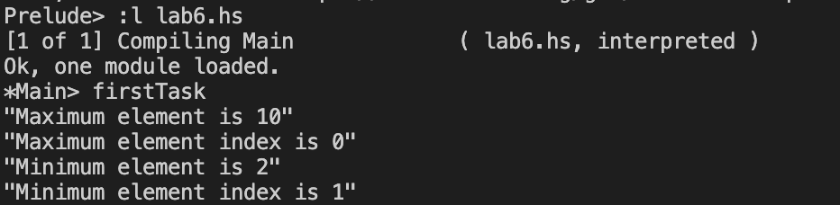
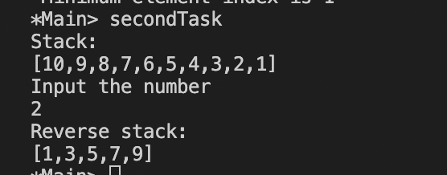

Результати виконання
Задача 1

Аналіз достовірності результатів
У першому завданні серед елементів вектору [10, 2, 4, 5, 9] мінімальним елементом є 2 з індексом 1, максимальним елементом є 10 з індексом 0.
Задача 2

>
Аналіз достовірності результатів
У другому завданні стек [10, 9, 8, 7, 6, 5, 4, 3, 2, 1] виведено у зворотньому порядку, виведені лише ті елементи, які не кратні введеному числу 2.